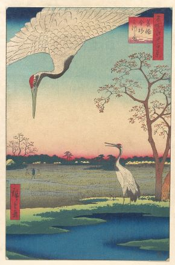
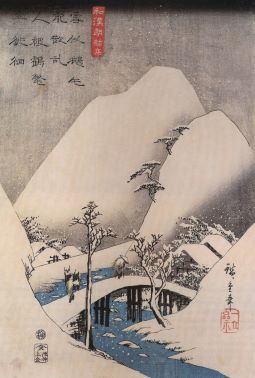

Hiroshige
A deepening from the main article
Description
In our main article we read why, along with Hokusai, Hiroshige is one of Japan's most renowned artists. Here we delve deeper into our unique finding: it seems Hiroshige reacted to Hokusai's The Wave.
All can agree that Western artists constantly react to each other's styles. Eastern art has traditionally been studied far less, but it doubtlessly was interactive too. For this article we focus on Hiroshige's reaction to a specific Hokusai painting in order to:
Hiroshige ~ Hokusai
In the main article we read how Hiroshige connotated cranes with humans on several occasions. We asked ourselves whether the bottom-right picture could be a reaction to Hokusai's The Wave. In the featured image we see above and to the left, the resemblance with Hokusai's print is even more striking: a boat with similar shape is clearly shown. Upon close inspection, the boat in this painting and on Hokusai's are positioned in the same way, are trapped in similar currents and bound to be hit by resembling waves. And, as we shall learn soon, the straws at the crane's foot symbolically resonate with the boat too.
Hiroshige (1830s)
The Wave (Early 1830s)

Hiroshige (1830s)
If we include the bottom-right picture in our comparison, we realize how oddly Hiroshige placed both cranes. The left crane is standing on a boat and the right one is flying less like a bird and more like the wild current and wind itself. Moreover, Hokusai's wave is mirrored with Hiroshige's wave. The downward 'V' of the rightmost crane resembles mount fuji's placement on the canvas and is also at the low side of the wave. These resemblances, the chronological proximity of these images as well as Hiroshige's and Hokusai's rivalry in terms of style and popularity make a consensual connection quite plausible.
"Cranes symbolize longevity"
As cranes have always stood for longevity and the everlasting in Japan, their peculiar placements and size suggests they symbolize everlasting natural forces at play. So, perhaps both Hiroshige's prints were a reaction to Hokuai's painting: the japanese nature, symbolized by cranes standing for the everlasting, would always prevail over humans. By extension Hiroshige could be saying that his notion of Furusato (birthplace) or the entire world focuses on the beauty of nature.In other artworks of Hiroshige this message seems to come forward as well. See below for a striking example .Online Museum sees this image as a pinnacle of the diminishing role of humans in Hiroshige's paintings. Hiroshige goes so far as to mock the tiny figure by hovering the crane right above it.

Cranes & Straws
The main article touches upon 'cranemen' on A bridge in a snowy landscape, which is shown in full down below. What we saved for this deepening is that the second Japanese sentence reads as such: "Bathing in snow, the people seem to dwell around dressed in cranes' wings". It is from Chinese poet Po Chü-i (known as Haku Rakuten in Japan), after whom a popular Noh play about a crane-woman was made.
The Connotation of cranes and straws seems to be hinted at by Hiroshige in the featured image at the very top too. The straws at the crane's foot may be Hiroshige's way to indicate a necessary correction; replacing Hokusai's straw boats and passengers. 
A bridge in a snowy landscape (early 1940s)